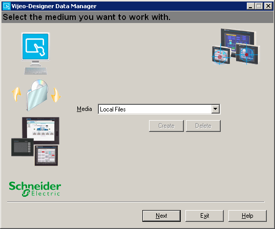

|
|
|
|
|
|
|
|
Data Manager is a graphical user interface for managing a target machine's recipe files (.rcp), data logging files (.dat), alarm files (.csv), video files (.vmg, .mp4, or .avi), snapshot files (.jpeg), and project backup files (.vdz). Data Manager supports the sending and retrieving of files over the Ethernet or USB.

Use Data Manager to:
Retrieve (get) - Retrieve recipe files (.rcp), data logging files (.dat), alarm files (.csv), video files, snapshot files (.jpeg), and project backup files (.vdz) from a target machine during run time. You can configure Data Manager to delete data logging files, alarm files, video files, screen shots, and project backup files on a target machine after successfully retrieving them. You cannot delete recipe files on a target machine after retrieving them.
Send (put) - Send recipe files (.rcp), comma separated files (.csv), or text files (.txt) to a target machine during run time.
Convert - Convert recipe files (.rcp) and data logging files (.dat) into either comma separated value files (.csv) or text files (.txt).
Edit - Retrieved recipe files (.rcp) can be edited using the Data Manager Recipe Editor.

Data Manager does not support the sending and retrieving of files over serial connections.
To use Data Manager to connect to a remote target, you cannot select Work Offline in Internet Explorer's File menu. If Work Offline is selected, you will not be able to connect to a remote target.
In order to allow a Data Manager to connect to a target, you must set up security for the target. See section 4.8.2.3, Protecting Targets from Unauthorized Data Transfer.
Data Manager converts the dates on data logging files and alarm files to the Time Zone and Daylight Saving Time settings of the computer where the Data Manager is installed.